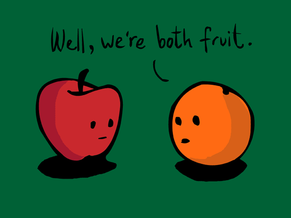
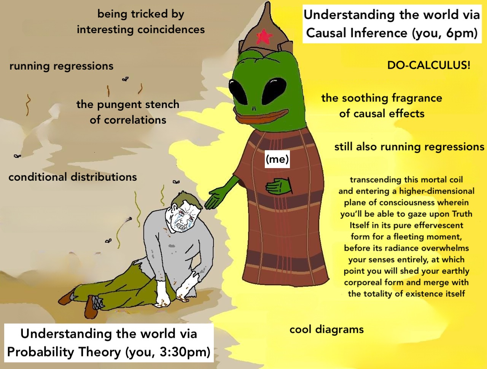
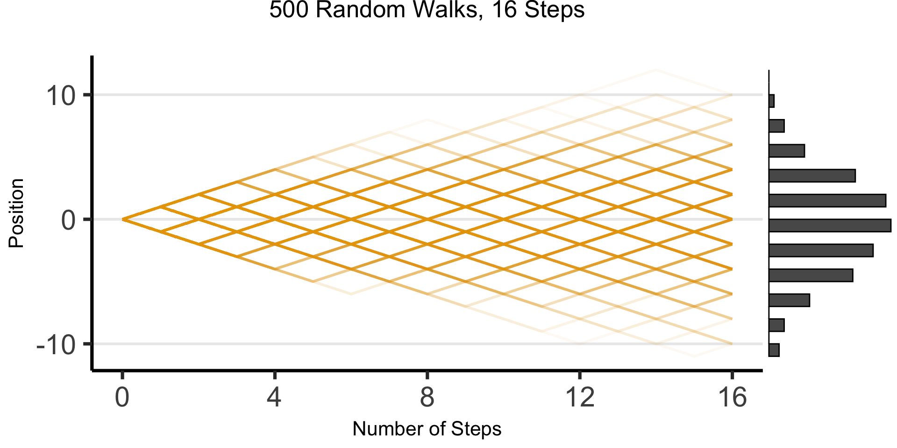
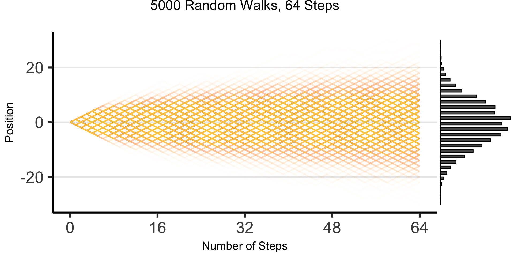
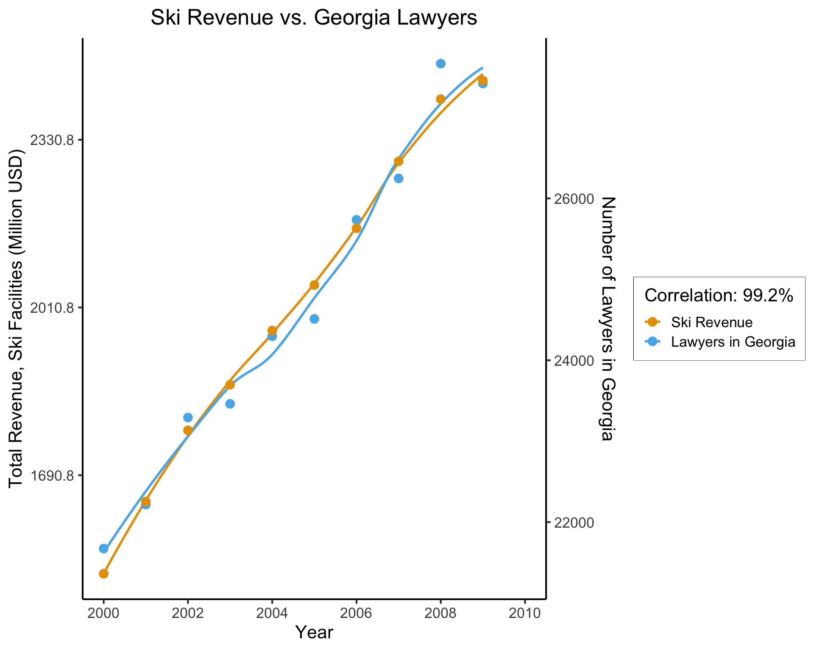
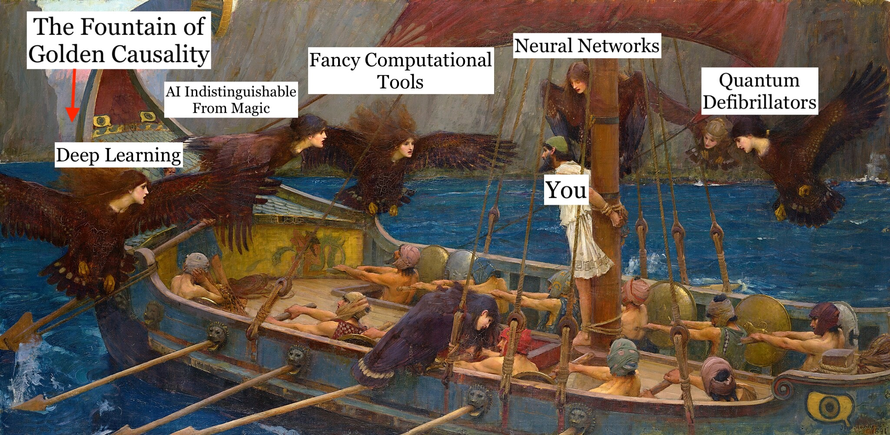

cb_palette = [
"#E69F00", "#56B4E9", "#009E73",
"#F0E442", "#0072B2", "#D55E00",
"#CC79A7"
]Week 2: Probabilistic Graphical Models (PGMs)
DSAN 5650: Causal Inference for Computational Social Science
Summer 2026, Georgetown University
Class Sessions
Schedule
Today’s Planned Schedule:
| Start | End | Topic | |
|---|---|---|---|
| Lecture | 6:30pm | 7:00pm | HW1 Questions and Concerns → |
| 7:00pm | 7:30pm | Motivating Examples: Causal Inference → | |
| 7:30pm | 7:45pm | Your First Probabilistic Graphical Model! → | |
| Break! | 7:45pm | 8:00pm | |
| 8:00pm | 9:00pm | PGM “Lab” → |
\[ \DeclareMathOperator*{\argmax}{argmax} \DeclareMathOperator*{\argmin}{argmin} \newcommand{\bigexp}[1]{\exp\mkern-4mu\left[ #1 \right]} \newcommand{\bigexpect}[1]{\mathbb{E}\mkern-4mu \left[ #1 \right]} \newcommand{\definedas}{\overset{\small\text{def}}{=}} \newcommand{\definedalign}{\overset{\phantom{\text{defn}}}{=}} \newcommand{\eqeventual}{\overset{\text{eventually}}{=}} \newcommand{\Err}{\text{Err}} \newcommand{\expect}[1]{\mathbb{E}[#1]} \newcommand{\expectsq}[1]{\mathbb{E}^2[#1]} \newcommand{\fw}[1]{\texttt{#1}} \newcommand{\given}{\mid} \newcommand{\green}[1]{\color{green}{#1}} \newcommand{\heads}{\outcome{heads}} \newcommand{\iid}{\overset{\text{\small{iid}}}{\sim}} \newcommand{\lik}{\mathcal{L}} \newcommand{\loglik}{\ell} \DeclareMathOperator*{\maximize}{maximize} \DeclareMathOperator*{\minimize}{minimize} \newcommand{\mle}{\textsf{ML}} \newcommand{\nimplies}{\;\not\!\!\!\!\implies} \newcommand{\orange}[1]{\color{orange}{#1}} \newcommand{\outcome}[1]{\textsf{#1}} \newcommand{\param}[1]{{\color{purple} #1}} \newcommand{\pgsamplespace}{\{\green{1},\green{2},\green{3},\purp{4},\purp{5},\purp{6}\}} \newcommand{\pedge}[2]{\require{enclose}\enclose{circle}{~{#1}~} \rightarrow \; \enclose{circle}{\kern.01em {#2}~\kern.01em}} \newcommand{\pnode}[1]{\require{enclose}\enclose{circle}{\kern.1em {#1} \kern.1em}} \newcommand{\ponode}[1]{\require{enclose}\enclose{box}[background=lightgray]{{#1}}} \newcommand{\pnodesp}[1]{\require{enclose}\enclose{circle}{~{#1}~}} \newcommand{\purp}[1]{\color{purple}{#1}} \newcommand{\sign}{\text{Sign}} \newcommand{\spacecap}{\; \cap \;} \newcommand{\spacewedge}{\; \wedge \;} \newcommand{\tails}{\outcome{tails}} \newcommand{\Var}[1]{\text{Var}[#1]} \newcommand{\bigVar}[1]{\text{Var}\mkern-4mu \left[ #1 \right]} \]
The Science \(\leadsto\) “Phase Transition”
Today’s Demo: Schelling’s Attendance Model
Coarse-Graining Units of Observation
| Field | Example Unit of Observation | |
|---|---|---|
| Physics | Particle | [Particle = Fine-Graining of Molecules] |
| Chemistry | Molecule = \(\cup\)(Particles) | [Molecule = Coarse-Graining of Particles] |
| Biology | Cell = \(\cup\)(Molecules) | |
| Neuro/Cog Sci | Brain = \(\cup\)(Cells) | |
| Human Physiology | Body = Brain \(\cup\) Other Organs | |
| ↑ Science 🧐 something happens here… 🤔 ↓ | ||
| Anthropology | Human-Relational System (e.g., Kinship) = \(\cup\)(Brains) \(\times\) Natural Environment | |
| Economics | Economy = Specific relational system of exchange w.r.t. scarce resources | |
| Political Economy | Economy-Context = Economic Exchange \(\cap\) Relational Power | |
| Sociology | Society = \(\cup\)(Relational Systems: Kinship, Friendship, Authority, Power, Violence) | |
| History | Longue-Durée = Evolution of Societies over Time and Space | |
Homo sapiens/Homo arbitratus/Homo mischievous

- Latin sapiens denotes being “discerning” or “wise”
- But… technically nothing stops us from choosing to be “unwise” whenever we’d like… bc free will
- \(\Rightarrow\) For this class, humans are Homo arbitratus: arbitratus denotes choosing what to do, after we’ve [sapiently] thought about it
Strangely-Relevant CS Topic: The Halting Problem
- Kurt Gödel \(\leftrightarrow\) Alan Turing: Entscheidungsproblem
- Theorem: It is not possible to write a computer program \(P(x)\) that detects whether or not a computer program \(x\) will eventually halt (as opposed to, e.g., looping forever)
- Proof: Assume \(P(x)\) is possible to write. Run it on
mischievous_program.py. Infinite contradiction loop.
halting_problem_solver.py
def will_it_halt(program, input):
# Put code you think will work here
# Return True if program will halt, False otherwisemischievous_program.py
def my_mischievous_function(input):
if will_it_halt(my_mischevious_function, input):
while True: pass # Infinite loop
else:
return # Halt| Input→ ↓Program |
0 | 1 | 2 | \(\cdots\) |
|---|---|---|---|---|
| 0 | Halt | Loop | Loop | \(\cdots\) |
| 1 | Loop | Loop | Halt | \(\cdots\) |
| 2 | Loop | Loop | Loop | \(\cdots\) |
| \(\vdots\) | \(\vdots\) | \(\vdots\) | \(\vdots\) | \(\mathbf{\ddots}\) |
| Loop | Halt | Halt | \(\mathbf{\cdots}\) |
The Takeaway: Bayesian Humility!
- Social science, with “science” used in the same sense as for physics, may be a quixotic endeavor2
- Instead, we’ll do , where we use data to…
- Infer tendencies: \(\mathsf{H}\) = «\(X\) tends to cause \(Y\)»
- With some degree of veracity: \(\Pr(\mathsf{H}) \approx 0.7\)
- Construct models that we can update with new evidence: Bayes’ rule! \(\Pr(\mathsf{H} \mid E) = \frac{\Pr(E \mid \mathsf{H} ) \Pr(\mathsf{H})}{\Pr(E)} \approx 0.8\)
- Notice “slippage” between aleatory probability within \(\mathsf{H}\) (“tends to”) vs. epistemic probability “outside of”, talking about \(\mathsf{H}\) (“I’m 70% confident about \(\mathsf{H}\)”)
Matching Estimators for Apples-to-Apples Comparisons

Case Study: Military Inequality \(\leadsto\) Military Success
- Lyall (2020): “Treating certain ethnic groups as second-class citizens […] leads victimized soldiers to subvert military authorities once war begins. The higher an army’s inequality, the greater its rates of desertion, side-switching, and casualties”
Matching constructs pairs of belligerents that are similar across a wide range of traits thought to dictate battlefield performance but that vary in levels of prewar inequality. The more similar the belligerents, the better our estimate of inequality’s effects, as all other traits are shared and thus cannot explain observed differences in performance, helping assess how battlefield performance would have improved (declined) if the belligerent had a lower (higher) level of prewar inequality.
Since [non-matched] cases are dropped […] selected cases are more representative of average belligerents/wars than outliers with few or no matches, [providing] surer ground for testing generalizability of the book’s claims than focusing solely on canonical but unrepresentative usual suspects (Germany, the United States, Israel)
Does Inequality Cause Poor Military Performance?
Covariates |
Sultanate of Morocco Spanish-Moroccan War, 1859-60 |
Khanate of Kokand War with Russia, 1864-65 |
|---|---|---|
| \(X\): Military Inequality | Low (0.01) | Extreme (0.70) |
| \(\mathbf{Z}\): Matched Covariates: | ||
| Initial relative power | 66% | 66% |
| Total fielded force | 55,000 | 50,000 |
| Regime type | Absolutist Monarchy (−6) | Absolute Monarchy (−7) |
| Distance from capital | 208km | 265km |
| Standing army | Yes | Yes |
| Composite military | Yes | Yes |
| Initiator | No | No |
| Joiner | No | No |
| Democratic opponent | No | No |
| Great Power | No | No |
| Civil war | No | No |
| Combined arms | Yes | Yes |
| Doctrine | Offensive | Offensive |
| Superior weapons | No | No |
| Fortifications | Yes | Yes |
| Foreign advisors | Yes | Yes |
| Terrain | Semiarid coastal plain | Semiarid grassland plain |
| Topography | Rugged | Rugged |
| War duration | 126 days | 378 days |
| Recent war history w/opp | Yes | Yes |
| Facing colonizer | Yes | Yes |
| Identity dimension | Sunni Islam/Christian | Sunni Islam/Christian |
| New leader | Yes | Yes |
| Population | 8–8.5 million | 5–6 million |
| Ethnoling fractionalization (ELF) | High | High |
| Civ-mil relations | Ruler as commander | Ruler as commander |
| \(Y\): Battlefield Performance: | ||
| Loss-exchange ratio | 0.43 | 0.02 |
| Mass desertion | No | Yes |
| Mass defection | No | No |
| Fratricidal violence | No | Yes |
Motivating Examples: Causal Inference
- The methodology we’ll use to draw inferences about social phenomena from data
Disclaimer: Unfortunate Side Effects of Engaging Seriously with Causality
You’ll no longer be able to read “scientific” writing without striking this expression (involuntarily):
“Scientific” talks will begin to sound like the following:
Blasting Off Into Causality!

Data-Generating Processes (DGPs)
- You saw this in DSAN 5100!
- «\(X_1, \ldots, X_n\) drawn i.i.d. Normal, mean \(\mu\) variance \(\sigma^2\)» characterizes DGP of \((X_1, \ldots, X_n)\)

- 5650: Dive into DGPs, rather than treating as black box/footnote to Law of Large Numbers, so we can move [asymptotically!]…
- From associational statements:
- «\(\underbrace{\text{An increase}}_{\small\text{noun}}\) in \(X\) by 1 is associated with increase in \(Y\) by \(\beta\)»
- To causal ones: «\(\underbrace{\text{Increasing}}_{\small\text{verb}}\) \(X\) by 1 causes \(Y\) to increase by \(\beta\)»
DGPs and the Emergence of Order
- Who can guess the state of this process after 10 steps, with 1 person?
- 10 people? 50? 100? (If they find themselves on the same spot, they stand on each other’s heads)
- 100 steps? 1000?
The Result: 16 Steps

The Result: 64 Steps

“Mathematical/Scientific Modeling”
- Thing we observe (poking out of water): data
- Hidden but possibly discoverable via deeper dive (ecosystem under surface): DGP

So What’s the Problem?
- Non-probabilistic models: High potential for being garbage
- tldr: even if SUPER certain, using \(\Pr(\mathsf{H}) = 1-\varepsilon\) with tiny \(\varepsilon\) has literal life-saving advantages3 (Finetti 1972)
- Probabilistic models: Getting there, still looking at “surface”
- Of the \(N = 100\) times we observed event \(X\) occurring, event \(Y\) also occurred \(90\) of those times
- \(\implies \Pr(Y \mid X) = \frac{\#[X, Y]}{\#[X]} = \frac{90}{100} = 0.9\)
- Causal models: Does \(Y\) happen because of \(X\) happening? For that, need to start modeling what’s happening under the surface making \(X\) and \(Y\) “pop up” together so often
The Shallow Problem of Causal Inference

cor(ski_df$value, law_df$value)[1] 0.9921178(Data from Vigen, Spurious Correlations)
This, however, is only a mini-boss. Beyond it lies the truly invincible FINAL BOSS… 🙀
The Fundamental Problem of Causal Inference
The only workable definition of «\(X\) causes \(Y\)»:
- The problem? We live in one world, not two identical worlds simultaneously 😭
What Is To Be Done?
Probability++
- Tools from prob/stats (RVs, CDFs, Conditional Probability) necessary but not sufficient for causal inference!
- Example: Say we use DSAN 5100 tools to discover:
- Probability that event \(E_1\) occurs is \(\Pr(E_1) = 0.5\)
- Probability that \(E_1\) occurs conditional on another event \(E_0\) occurring is \(\Pr(E_1 \mid E_0) = 0.75\)
- Unfortunately, we still cannot infer that the occurrence of \(E_0\) causes an increase in the likelihood of \(E_1\) occurring.
Beyond Conditional Probability
- This issue (that conditional probabilities could not be interpreted causally) at first represented a kind of dead end for scientists interested in employing probability theory to study causal relationships…
- Recent decades: researchers have built up an additional “layer” of modeling tools, augmenting existing machinery of probability to address causality head-on!
- Pearl (2000): Formal proofs that (\(\Pr\) axioms) \(\cup\) (\(\textsf{do}\) axioms) \(\Rightarrow\) causal inference procedures successfully recover causal effects
Preview: do-Calculus
- Extends core of probability to incorporate causality, via \(\textsf{do}\) operator
- \(\textsf{do}(X = 5)\) is a “special” event, representing intervention in DGP to force \(X \leftarrow 5\)… \(\textsf{do}(X = 5)\) not the same event as \(X = 5\)!
| \(X = 5\) | \(\neq\) | \(\textsf{do}(X = 5)\) |
|---|---|---|
| Observing that \(X\) took on value 5 (for some possibly-unknown reason) | \(\neq\) | Intervening to force \(X \leftarrow 5\), all else in DGP remaining the same (intervention then “flows” through rest of DGP) |
Trickiest 5650 thing to wrap head around at first!
“Special” means \(\Pr(\textsf{do}(X = 5))\) not well-defined, only \(\Pr(Y = 6 \mid \textsf{do}(X = 5))\)
- What would \(\Pr(X = 6 \mid \textsf{do}(X = 5)))\) be? \(\Pr(X = 5 \mid \textsf{do}(X = 5))\)?
To avoid confusion with “normal” events, we may use notation like:
\[ \Pr(Y = 6 \mid \textsf{do}(X = 5)) \equiv \textstyle \Pr_{\textsf{do}(X = 5)}(Y = 6) \text{ or }\Pr(Y = 6 \mid \Omega_{X = 5}) \]
Causal World Unlocked 😎 (With Great Power Comes Great Responsibility…)
- With \(\textsf{do}(\cdot)\) in hand… (Alongside DGP satisfying axioms slightly more strict than core probability axioms)
- We can make causal inferences from similar pair of facts! If:
- Probability that event \(E_1\) occurs is \(\Pr(E_1) = 0.5\),
- The probability that \(E_1\) occurs conditional on the event \(\textsf{do}(E_0)\) occurring is \(\Pr(E_1 \mid \textsf{do}(E_0)) = 0.75\),
- Now we can actually infer that the occurrence of \(E_0\) caused an increase in the likelihood of \(E_1\) occurring!
Ulysses and the [Computational] Sirens

Your First PGM!

- Which of the variables (ovals) are observed? Which are latent?
- What do you think the arrows represent?
- Can we use this to find the “root cause” of (e.g.) observed chest pain? Or conversely, to predict possible ↑ in likelihood of chest pain if we start smoking?
Bayesian Inference but with Pictures
A Probabilistic Graphical Model (PGM) provides us with:
- A formal-mathematical…
- But also easily visualizable (by construction)…
- Representation of a data-generating process (DGP)!
Example: Let’s model how weather \(W\) affects evening plans \(Y\): the choice between going to a party or staying in to watch movies
Two Main “Building Blocks”
Nodes like \(\require{enclose}\enclose{circle}{X}\) denote Random Variables:
\[ \require{enclose}\boxed{\enclose{circle}{X}} \simeq \boxed{ \begin{array}{c|cc}x & \textsf{Tails} & \textsf{Heads} \\\hline \Pr(X = x) & 0.5 & 0.5\end{array}} \]
Edges like \(\require{enclose}\enclose{circle}{X} \rightarrow \enclose{circle}{Y}\) denote relationships between RVs
- What an edge “means” can get [ontologically] tricky!
- Retain sanity by just remembering: an edge \(\require{enclose}\enclose{circle}{X} \rightarrow \enclose{circle}{Y}\) is included in our PGM if we “care about” modeling the conditional probability table (CPT) of \(Y\) w.r.t. \(X\)
\[ \require{enclose}\boxed{ \enclose{circle}{X} \rightarrow \enclose{circle}{Y} } \simeq \boxed{ \begin{array}{c|cc} x & \Pr(Y = \textsf{Lose} \mid X = x) & \Pr(Y = \textsf{Win} \mid X = x) \\\hline \textsf{Tails} & 0.8 & 0.2 \\ \textsf{Heads} & 0.5 & 0.5 \end{array} } \]
PGM for the Partier’s Dilemma
- A node \(\require{enclose}\enclose{circle}{W}\) denoting RV \(W\), which can take on values in \(\mathcal{R}_W = \{\textsf{Sun}, \textsf{Rain}\}\),
- A node \(\require{enclose}\enclose{circle}{Y}\) denoting RV \(Y\), which can take on values in \(\mathcal{R}_Y = \{\textsf{Go}, \textsf{Stay}\}\), and
- An edge \(\require{enclose}\enclose{circle}{W} \rightarrow \enclose{circle}{Y}\) representing the following relationship between \(W\) and \(Y\):
- \(\Pr(Y = \textsf{Go} \mid W = \textsf{Sun}) = 0.8\)
- \(\Pr(Y = \textsf{Stay} \mid W = \textsf{Sun}) = 0.2\)
- \(\Pr(Y = \textsf{Go} \mid W = \textsf{Rain}) = 0.1\)
- \(\Pr(Y = \textsf{Stay} \mid W = \textsf{Rain}) = 0.9\)

| \(\Pr(Y = \textsf{Stay} \mid W)\) | \(\Pr(Y = \textsf{Go} \mid W)\) | |
|---|---|---|
| \(W = \textsf{Sun}\) | 0.2 | 0.8 |
| \(W = \textsf{Rain}\) | 0.9 | 0.1 |
Observed vs. Latent Nodes
- PGMs help us make valid (Bayesian) inferences about the world in the face of incomplete information!
- Key remaining tool: separation of nodes into two categories:
- Observed nodes (shaded)
- Latent nodes (unshaded)
- \(\Rightarrow\) Can use our PGM as a weather-inference machine!
- If we observe \(i\) at a party, what can we infer about the weather outside?
Observed Partier, Latent Weather
- We can draw this situation as a PGM with shaded and unshaded nodes, distinguishing what we know from what we’d like to infer:

| ❓ | ✅ |
- And we can now use Bayes’ Rule to compute how observed information (\(i\) at party \(\Rightarrow [Y = \textsf{Go}]\)) “flows” back into \(W\)
Computation via Bayes’ Rule
- Bayes’ Rule, \(\Pr(A \mid B) = \frac{\Pr(B \mid A)\Pr(A)}{\Pr(B)}\), tells us how to use info about \(\Pr(B \mid A)\) to obtain info about \(\Pr(A \mid B)\)!
- We use it to obtain a distribution for \(W\) updated to incorporate new info \([Y = \textsf{Go}]\):
\[ \begin{align*} &\Pr(W = \textsf{Sun} \mid Y = \textsf{Go}) = \frac{\Pr(Y = \textsf{Go} \mid W = \textsf{Sun}) \Pr(W = \textsf{Sun})}{\Pr(Y = \textsf{Go})} \\ =\, &\frac{\Pr(Y = \textsf{Go} \mid W = \textsf{Sun}) \Pr(W = \textsf{Sun})}{\Pr(Y = \textsf{Go} \mid W = \textsf{Sun}) \Pr(W = \textsf{Sun}) + \Pr(Y = \textsf{Go} \mid W = \textsf{Rain}) \Pr(W = \textsf{Rain})} \end{align*} \]
- Plug in info from CPT to obtain our new (conditional) probability of interest:
\[ \begin{align*} \Pr(W = \textsf{Sun} \mid Y = \textsf{Go}) &= \frac{(0.8)(0.5)}{(0.8)(0.5) + (0.1)(0.5)} = \frac{0.4}{0.4 + 0.05} \approx 0.89 \end{align*} \]
- We’ve learned something interesting! Observing \(i\) at the party \(\leadsto\) probability of sun jumps from \(0.5\) (“prior” estimate of \(W\), best guess without any other relevant info) to \(0.89\) (“posterior” estimate of \(W\), best guess after incorporating relevant info).
References
Barron, Alexander T. J., Jenny Huang, Rebecca L. Spang, and Simon DeDeo. 2018. “Individuals, Institutions, and Innovation in the Debates of the French Revolution.” Proceedings of the National Academy of Sciences 115 (18): 4607–12.
Blaydes, Lisa, Justin Grimmer, and Alison McQueen. 2018. “Mirrors for Princes and Sultans: Advice on the Art of Governance in the Medieval Christian and Islamic Worlds.” The Journal of Politics 80 (4): 1150–67.
Finetti, Bruno de. 1972. Probability, Induction and Statistics: The Art of Guessing. J. Wiley.
Hume, David. 1739. A Treatise of Human Nature: Being an Attempt to Introduce the Experimental Method of Reasoning Into Moral Subjects; and Dialogues Concerning Natural Religion. Longmans, Green.
Kalyvas, Stathis N. 2006. The Logic of Violence in Civil War. Cambridge University Press.
Koller, Daphne, and Nir Friedman. 2009. Probabilistic Graphical Models: Principles and Techniques. MIT Press.
Kozlowski, Austin C., Matt Taddy, and James A. Evans. 2019. “The Geometry of Culture: Analyzing the Meanings of Class Through Word Embeddings.” American Sociological Review 84 (5): 905–49.
Lyall, Jason. 2020. Divided Armies: Inequality and Battlefield Performance in Modern War. Princeton University Press.
Pearl, Judea. 2000. Causality: Models, Reasoning, and Inference. Cambridge University Press.
Sperber, Dan. 1996. Explaining Culture: A Naturalistic Approach. Cambridge: Blackwell.
Appendix: Zero Probabilities
From Koller and Friedman (2009), pp. 66-67:
Zero probabilities: A common mistake is to assign a probability of zero to an event that is extremely unlikely, but not impossible. The problem is that one can never condition away a zero probability, no matter how much evidence we get. When an event is unlikely but not impossible, giving it probability zero is guaranteed to lead to irrecoverable errors. For example, in one of the early versions of the the Pathfinder system (box 3.D), 10 percent of the misdiagnoses were due to zero probability estimates given by the expert to events that were unlikely but not impossible.
Footnotes
Obligatory quantum footnote: human agency [maybe] plays a role, in a quirky way, in physics at tiny subatomic scales; but once we coarse grain to atoms (+avoid speed of light), Newton’s Laws accurate to many decimals 🤯↩︎
At least, for the time being… BUT see Sperber (1996), which will come up later↩︎
See Appendix Slide↩︎